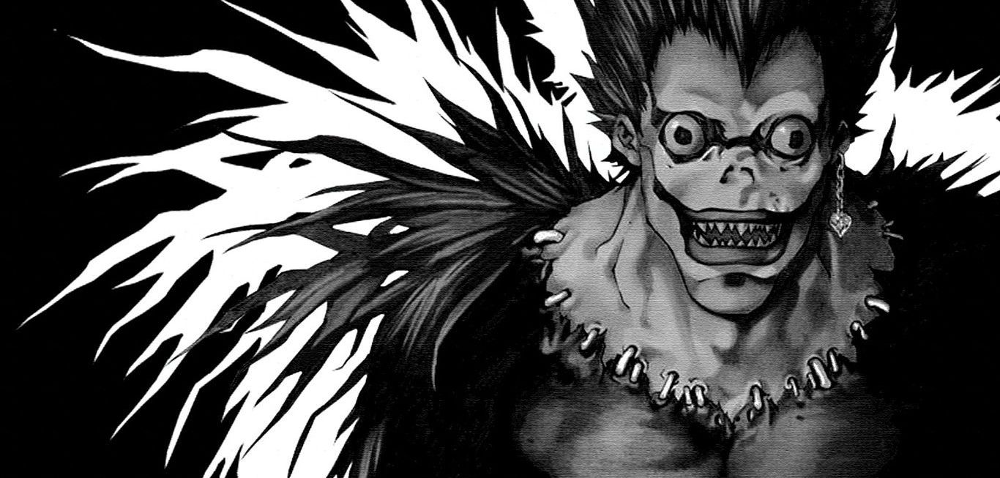
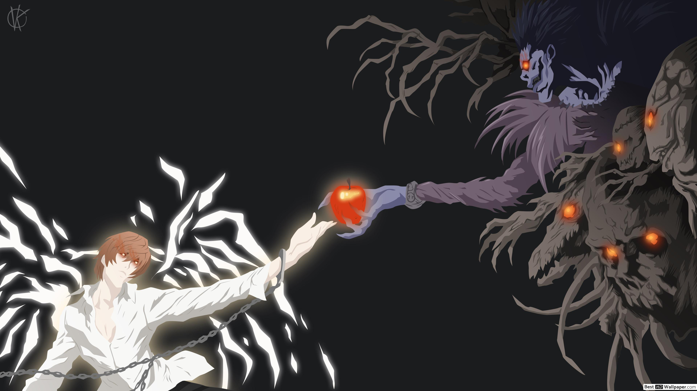
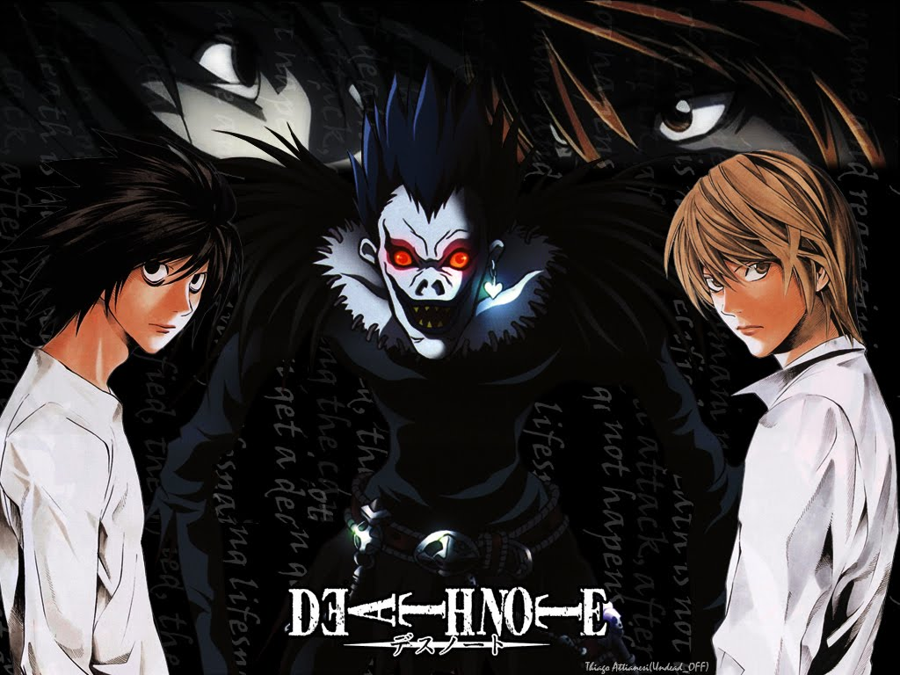

Desu nōto
Galeria zdjęć:
  

Spis treści:
Czym jest Death Note
Death Note (jap. デスノート Desu nōto) – manga autorstwa Tsugumi Ōby, ilustrowana przez Takeshiego Obatę. Składa się ze stu ośmiu rozdziałów, liczby symbolicznej dla serii, wydanych w dwunastu tomach. Od 3 października 2006 roku do 27 czerwca 2007 trwała premierowa
emisja anime Notatnik śmierci. Powstał także dwuczęściowy film kinowy, wydany pod tytułami Death Note: Notatnik śmierci i Death Note: Ostatnie imię, jak i również spin-off, L: Change the World i sequel Death Note: Light Up the New World.
W połowie 2008 roku amerykańskie studio Vertigo Entertainment zapowiedziało stworzenie remake’u Death Note, którego premiera wstępnie planowana była na 2010 rok. W 2015 powstał musical na podstawie mangi, a dwa lata później Netflix wyprodukował
amerykańską ekranizacje historii. Oryginalny japoński tytuł to ＤＥＡＴＨ ＮＯＴＥ, chociaż spotyka się tam również pisownię デスノート. Pierwszej formy używa się w oficjalnych materiałach, takich jak okładki czy plakaty; w mandze, anime i filmach bohaterowie
posługują się formą desu nōto zamiast death note – w skryptach oraz na kartach mangi pojawia się zapis デスノート. W roli openingu i endingu anime Notatnik śmierci wykorzystano utwory zespołu Nightmare oraz Maximum the Hormone.
Powrót na górę strony
Fabuła
Death Note opowiada historię genialnego licealisty imieniem Light Yagami, który znajduje tajemniczy notes upuszczony przez shinigamiego Ryūka. Notes ten posiada niesamowite właściwości: jego użytkownik, wpisując do niego imię oraz nazwisko osoby, której
twarz zna, powoduje śmierć tej osoby w określonych okolicznościach w ciągu 40 sekund. Jeśli w ciągu tych 40 sekund od zapisania imienia ofiary nie zostanie wpisana przyczyna śmierci, osoba umrze na zawał serca. Light dostrzega w tym szansę
oczyszczenia świata ze wszelkiego zła. Pod pseudonimem Kira (od angielskiego killer), który to nadali mu jego zwolennicy, zaczyna wprowadzać swój plan w życie. Na drodze staje mu jednak tajemniczy L – legendarny detektyw, geniusz, postrzegający
działania Kiry jako zwykłe morderstwa. Fabuła filmów miejscami znacznie odbiega od mangowych wątków, co nie spotkało się z aprobatą wielu miłośników komiksu. Anime jest znacznie wierniejszą adaptacją mangi, niemalże w stu procentach zgodną
z papierowym pierwowzorem.
Powrót na górę strony
Moje ulubione postaci:
- L Lawliet (エル・ローライト, Eru Rōraito), posługujący się pseudonimem L, jest uznawany za najlepszego detektywa na świecie. Pozytywnie rozwiązał wiele spraw. Bierze udział w śledztwie, mającym na celu schwytanie seryjnego mordercy, znanego jako Kira.L jest skryty i nieufny, a ze światem zewnętrznym komunikuje się za pośrednictwem swojego asystenta, Watariego. Nie ujawnia publicznie swojej twarzy, zamiast tego używając jako swojego symbolu litery L, zapisywanej czcionką „Old English MT” lub „Cloister Black”.maskuje swoją niezwykłą inteligencję pod fizyczną niedbałością o wygląd i zupełnym ignorowaniem przyjętych norm zachowań. Kieruje się złożoną dedukcją i potrafi wyciągać wnioski, łącząc ze sobą pozornie niepowiązane informacje. Jest bardzo skrupulatny i analityczny. Z natury podejrzliwy, nie waha się przed zastosowaniem drastycznych metod, by wykluczyć lub potwierdzić swoje przypuszczenia. Niektóre z jego decyzji można uznać za moralnie dyskusyjne, a nawet nieetyczne. Przykładem tego było sprowokowanie Kiry do zabicia Linda L. Tailora w czasie telewizyjnego przekazu na żywo, aby zbadać jego reakcję i zdobyć nowe dane o przeciwniku. Czasem zachowuje się wręcz dziwacznie, chociażby przykuwając się na całe miesiące kajdankami do Lighta Yagami, który jest jego głównym podejrzanym. Ma kilka typowych dla siebie dziwactw, jak: kucanie - zamiast siedzenia; jedzenie tylko słodkości - uwielbia desery, żelki, cukierki. Często bardzo uważnie układa kostki cukru lub w inny sposób bawi się produktami spożywczymi. L wykazuje również poczucie humoru i nierzadko bywa sarkastyczny. Chociaż stara się być dla ludzi uprzejmym, dla niektórych (jak dla Suichiego Aizawy z Grupy Dochodzeniowej), potrafi być nieuprzejmy i oschły.
- Ryūk (リューク Ryūku) to jeden z bohaterów anime i mangi Death Note. Jest Shinigamim (Bogiem Śmierci), który z nudów postanawia uzyskać drugi Notatnik śmierci od Króla Shinigami ze swojego świata i upuścić go w ludzkim świecie, aby zobaczyć ewentualny efekt takiego działania.Ryūk ma wielką słabość do jabłek ze Świata Ludzi, na tyle, że można to porównać do ludzkich uzależnień do alkoholu i papierosów (sam skarży się Misie Amane, że jabłka z Królestwa Shinigami są ususzone i pełne piasku). Jeżeli nie dostanie i nie zje swojej codziennej porcji, dostaje objawów abstynencyjnych, które objawiają się wykręcenia ciała w kształty precla czy stanie na rękach. Ponadto jest typowym Shinigamim, jest złośliwy, gdy dzieje się coś złego lub gdy Lightowi nie idzie po myśli, wtedy się śmieje i rzuca dość złośliwe komentarze. Sam stwierdził, że jest nieśmiały wobec kobiet, było to widać, kiedy Misa go przytuliła.Zapisuje imiona i nazwiska w swoim notatniku przez co zyskuje dodatkowe lata życia, które pozostały zmarłym aż do normalnego końca życia. Dodatkowo widzi datę śmierci i prawdziwe nazwiska ludzi, a ponadto mogą zobaczyć go jedynie te osoby, które wcześniej dotknęły notatnika. W czasie poczynań Kiry uważa, że jest tylko obserwatorem i nie ingeruje w jego sprawy , Choć na końcu sam zapisuje Lighta w swoim notatniku.
- Light Yagami (夜神 月, Yagami Raito), znany także jako Kira (jap. キラ) to główny bohater mangi i anime Death Note. Jest właścicielem Notatnika Śmierci.Light jest postacią Kamidere - uznającą się za boga i chcącą być za takowego uznawana. Poznajemy Lighta jako niezwykle inteligentnego, pilnego ucznia, oddanego syna, który chętnie pomaga swojej siostrze w nauce. Jest grzeczny, dobrze wychowany i kulturalny. Fandom may earn an affiliate commission on sales made from links on this page. Od chwili, gdy znalazł Notatnik śmierci widzimy jego inne cechy: żądzę władzy, brak skrupułów, przebiegłość i skłonności do oszustwa i podstępu. Najpierw odczuwa wyrzuty sumienia, z powodu odbierania komuś życia, jednak te szybko mijają, a Light zaczyna dążyć do swojego celu: bycia stwórcą i bogiem nowego świata, w którym to on będzie decydował, co jest sprawiedliwe.Widzimy również inną jego cechę: mimo, że na początku chciał zabijać tylko „tych złych”, to potem za pomocą Notesu pozbywał się wszystkich, którzy stanęli mu na drodze, bez wyjątku. Przez chwilę nawet rozważa zabicie własnej siostry - Sayu Yagami. Z powodu korzystania z Death Note ujawniają się w Yagamim złe cechy. Staje się okrutny, złośliwy i całkowicie pozbawiony cech takich jak współczucie, miłosierdzie, empatia czy też miłość. Idealizuje siebie w swoich wyobrażeniach, widzi w sobie zbawiciela dla ludzkości. Uważa, że cel uświęca środki.
Powrót na górę strony
2020 © Jakub Żuk 2tb - Wszelkie prawa zastrzeżone